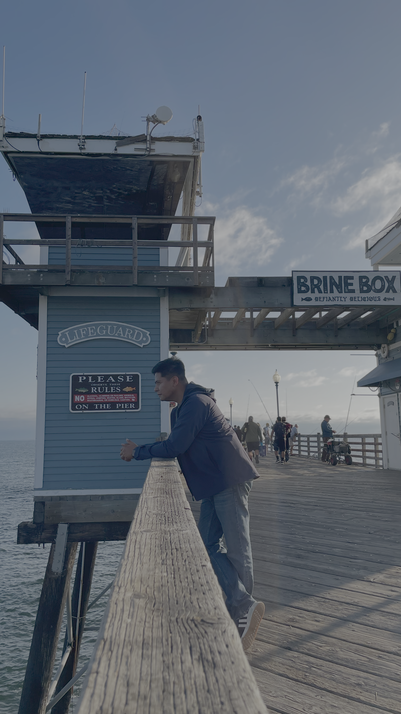
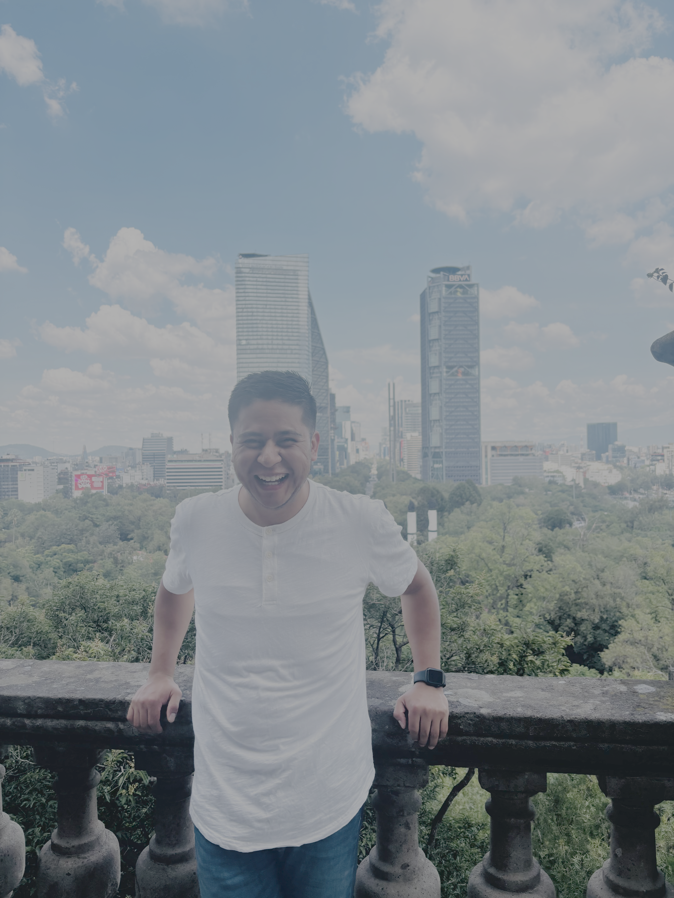
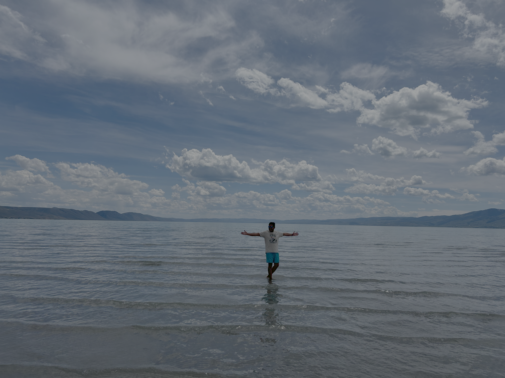

About Me
Engineering, software, and a practical way of building.
My name is Sergio Coria. I started my career as an Industrial Engineer, working in manufacturing environments where I learned the value of efficiency, teamwork, quality, and solving real problems.
Over time, I became more interested in how technology can improve the way people work. That interest led me into software development, automation, web projects, and digital systems.
Today, I’m building a path that connects manufacturing experience with software development. My goal is to create practical tools, better workflows, and systems that make real operations easier to understand and improve.



Where I come from
My background is in manufacturing, quality, production support, and continuous improvement. I learned to see problems from the floor, not only from a desk.
What I’m learning
I’m currently focused on software development, web applications, databases, APIs, cybersecurity fundamentals, and building projects that help me connect both worlds.
What I’m building toward
I want to create useful systems for operations, maintenance, quality, automation, and industrial technology.